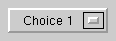
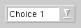
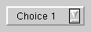

The QComboBox widget is a combined button and popup list. More...
#include <qcombobox.h>
Inherits QWidget.
A combo box may be defined as a selection widget which displays the current selection, and which can pop up a list of possible selections. Some combo boxes also allow the user to select arbitrary strings, using a line editor.
Since combo boxes occupy little screen space and always display the current selection, they are very well suited to displaying and selecting modes (such as font family and size): The user can always see what mode he/she is in, and the majority of the screen space is available for real work.
QComboBox supports three different appearances: Motif 1.x, Motif 2.0 and Windows 95. In Motif 1.x, a combo box was called XmOptionMenu. In Motif 2.0, OSF introduced an improved combo box and named that XmComboBox. QComboBox provides both.
QComboBox provides two different constructors. The simplest one creates an old-style combo box in Motif style:
QComboBox * c = new QCombBox( this, "read-only combo" );
The other one creates a new-style combo box in Motif style, and can create both read-only and read-write combo boxes:
QComboBox * c1 = new QCombBox( FALSE, this, "read-only combo" );
QComboBox * c2 = new QCombBox( TRUE, this, "read-write combo" );
New-style combo boxes use a list box in both Motif and Windows styles, and both the content size and the on-screen size of the list box can be limited. Old-style combo boxes use a popup in Motif style, and that popup will happily grow larger than the desktop if you put enough data in it.
The two constructors create identical-looking combos in Windows style.
Read-only combo boxes can contain pixmaps as well as texts; the insert() and changeItem() functions are suitably overloaded. If you try to insert a pixmap in a read-write combo box, QComboBox simply ignores you. For read-write combo boxes, the function clearEdit() is provided, to clear the displayed string without changing the combo box' contents.
A combo box emits two signals, activated() and highlighted(), when a
new item has been activated (selected) or highlighted (set to
current). Both signals exist in two versions, one with a char*
argument and one with an int argument. If the user highlights or
activates a pixmap, only the int signals are emitted.
Read-write combo boxes offer four policies for dealing with typed input:
NoInsertion means to simply emit the activated()
signal, AtBottom means to insert the string at the bottom of
the combo box and emit activated(), AtTop means to insert
the string at the top of the combo box and emit activated(), and
finally AtCurrent means to replace the previously selected
item with the typed string, and emit activated(). AtBottom, you can change it using
setInsertionPolicy().
It is possible to constrain the input to an editable combo box using QValidator; see setValidator(). By default, all input is accepted.
A combo box has a default focusPolicy() of TabFocus, i.e. it will
not grab focus if clicked. This differs from both Windows and Motif.
(Motif 1, read-only)
(Motif 2, read-write)
(Motif 2, read-only)
 (Windows style)
(Windows style)
See also: QLineEdit, QListBox, QSpinBox, QRadioButton, QButtonGroup, GUI Design Handbook: Combo Box, and GUI Design Handbook: Drop-Down List Box.
Examples: tictac/tictac.cpp qmag/qmag.cpp widgets/widgets.cpp
Constructs a combo box widget with a parent and a name.
This constructor creates a popup menu if the program uses Motif look and feel; this is compatible with Motif 1.x.
Constructs a combo box with a maximum size and either Motif 2.0 or Windows look and feel.
The input field can be edited if rw is TRUE, otherwise the user may only choose one of the items in the combo box.
Destroys the combo box.
[signal]This signal is emitted when a new item has been activated (selected). string is the activated string.
You can also use activated(int) signal, but be aware that its argument meaningful only for selected strings, not for typed strings.
[signal]This signal is emitted when a new item has been activated (selected). The index is the position of the item in the popup list.
Returns TRUE if this combo box is in auto-completion mode.
See also: setAutoCompletion().
Returns TRUE if auto-resizing is enabled, or FALSE if auto-resizing is disabled.
Auto-resizing is disabled by default.
See also: setAutoResize().
Replaces the item at position index with a pixmap, unless the combo box is writable.
See also: insertItem().
Replaces the item at position index with a text.
Removes all combo box items.
[slot]Clears the line edit without changing the combo's contents. Does nothing if the combo isn't editable.
This is particularly handy when using a combo box as a line edit with history. For example you can connect the combo's activated() signal to clearEdit() in order to present the user with a new, empty line as soon as return is pressed.
See also: setEditText().
[slot]This slot is equivalent to setValidator( 0 ).
Returns the number of items in the combo box.
Returns the index of the current combo box item.
See also: setCurrentItem().
Returns the text item being edited, or the current text item if the combo box is not editable.
See also: text().
[virtual]This event filter is used to manipulate the line editor in magic ways. In Qt 2.0 it will all change, until then binary compatibility lays down the law.
The event filter steals events from the popup or listbox when they are popped up. It makes the popup stay up after a short click in motif style. In windows style it toggles the arrow button of the combo box field, and activates an item and takes down the listbox when the mouse button is released.
Reimplemented from QObject.
[virtual protected]Handles focus in events.
Reimplemented from QWidget.
[signal]This signal is emitted when a new item has been highlighted. string is the highlighted string.
You can also use highlighted(int) signal.
[signal]This signal is emitted when a new item has been set to current. The index is the position of the item in the popup list.
Inserts a pixmap item at position index. The item will be appended if index is negative.
If the combo box is writable, the pixmap is not inserted.
Inserts a text item at position index. The item will be appended if index is negative.
Examples: widgets/widgets.cpp
Inserts the list of strings at the index index in the combo box.
Examples: qmag/qmag.cpp
Inserts the array of strings at the index index in the combo box.
The numStrings argument is the number of strings. If numStrings is -1 (default), the strs array must be terminated with 0.
Example:
static const char *items[] = { "red", "green", "blue", 0 };
combo->insertStrList( items );
Returns the current insertion policy of the combo box.
See also: setPolicy().
[virtual protected]Handles key press events for the combo box.
In Motif style, up and down change the selected item and both enter and return pops up the list. In Windows style, all four arrow keys change the selected item, and Space pops up the list.
Reimplemented from QWidget.
Returns the current list box, or 0 if there is no list box currently. (QComboBox can use QPopupMenu instead of QListBox.) Provided to match setListBox().
See also: setListBox().
Returns the current maximum size of the combo box. By default, there is no limit, so this function returns INT_MAX.
See also: setMaxCount() and count().
[virtual protected]Handles mouse double click events for the combo box.
Reimplemented from QWidget.
[virtual protected]Handles mouse move events for the combo box.
Reimplemented from QWidget.
[virtual protected]Handles mouse press events for the combo box.
Reimplemented from QWidget.
[virtual protected]Handles mouse release events for the combo box.
Reimplemented from QWidget.
[virtual protected]Handles paint events for the combo box.
Reimplemented from QWidget.
Returns the pixmap item at a given index, or 0 if the item is not a pixmap.
[protected]Popups the combo box popup list. If the list is empty, inserts a single, empty, string.
Removes the item at position index.
[virtual protected]Handles resize events for the combo box.
Reimplemented from QWidget.
Sets this combo box to offer auto-completion while the user is editing if enable is TRUE, or not to offer auto-completion of enable is FALSE (the default).
The combo box uses the list of items as candidates for completion.
See also: autoCompletion() and setEditText().
Examples: widgets/widgets.cpp
Enables auto-resizing if enable is TRUE, or disables it if enable is FALSE.
When auto-resizing is enabled, the combo box button will resize itself whenever the current combo box item change.
See also: autoResize() and adjustSize().
[virtual]Reimplements QWidget::setBackgroundColor().
Sets the background color for both the combo box button and the combo box popup list.
Reimplemented from QWidget.
Sets the current combo box item. This is the item to be displayed on the combo box button.
See also: currentItem().
Examples: qmag/qmag.cpp
[slot]Sets the text in the embedded line edit to newText without changing the combo's contents. Does nothing if the combo isn't editable.
This is useful e.g. for providing a good starting point for the user's editing and entering the change in the combo only when the user presses enter.
See also: clearEditText() and insertItem().
[virtual]Reimplemented for internal purposes.
Reimplemented from QWidget.
[virtual]Reimplements QWidget::setFont().
Sets the font for both the combo box button and the combo box popup list.
Reimplemented from QWidget.
Sets the insertion policy of the combo box to policy.
The insertion policy governs where items typed in by the user are inserted in the list. The possible values are
NoInsertion: Strings typed by the user aren't inserted anywhere AtTop: Strings typed by the user are inserted above the top item
in the list The default insertion policy is AtBottom.
See also: policy().
Sets the combo box to use newListBox instead of the current list box or popup. As a site effect, clears the combo box of its current contents.
Warning: QComboBox assumes that newListBox->text(n) returns non-null for 0 <= n < newListbox->count(). This assumption is necessary becuase of the line edit in QComboBox.
Sets the maximum number of items the combo box can hold to count.
If count is smaller than the current number of items, the list is truncated at the end. There is no limit by default.
See also: maxCount() and count().
[virtual]Reimplements QWidget::setPalette().
Sets the palette for both the combo box button and the combo box popup list.
Reimplemented from QWidget.
Sets the maximum on-screen size of the combo box to lines. This is disregarded in Motif 1.x style. The default limit is ten lines.
If the number of items in the combo box is/grows larger than
lines, a list box is added.
See also: sizeLimit(), count() and setMaxCount().
[virtual]Reimplemented for implementational reasons.
Note that QComboBox always turns into a new-style Motif combo box when it is changed from Windows to Motif style (even if it was an old-style combo box before).
Reimplemented from QWidget.
Sets this combo box to be editable only as allowed by v.
This function does nothing if the combo is not editable.
See also: validator(), clearValidator() and QValidator.
[virtual]Returns a size which fits the contents of the combo box button.
Examples: widgets/widgets.cpp
Reimplemented from QWidget.
Returns the current maximum on-screen size of the combo box. The default is ten lines.
See also: setSizeLimit(), count() and maxCount().
Returns the text item at a given index, or 0 if the item is not a string.
See also: currentText().
Returns the validator which constrains editing for this combo box if there is any, or else 0.
See also: setValidator(), clearValidator() and QValidator.
Search the documentation, FAQ, qt-interest archive and more (uses
www.troll.no):
This file is part of the Qt toolkit, copyright © 1995-99 Troll Tech, all rights reserved.
It was generated from the following files:
| Copyright © 1999 Troll Tech | Trademarks | Qt version 1.45
|